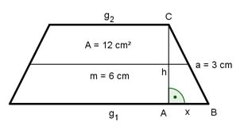

Aufgabe 91 Wie groß sind g1 und g2 von dem gleichschenkligen Trapez?  A = m * h |:m A 12 cm2 h = --- = -------- = 2 cm m 6 cm g1 + g2 m = ---------- | *2 2 2m = g1 + g2 | -g2 g1 = 2m – g2 Satz von Pythagoras im Dreieck ABC: 32 = 22 + x2 | -4 x2 = 9 – 4 |√ x = 2,2 cm g2 = g1 – 2x g1 = 2m – (g1 – 2x) g1 = 2m – g1 + 2x | +g1 2g1 = 12 + 4,4 2g1 = 16,4 | :2 g11 = 8,2 cm g2 = 8,2 cm – 2 * 2,2 cm = 3,8 cm